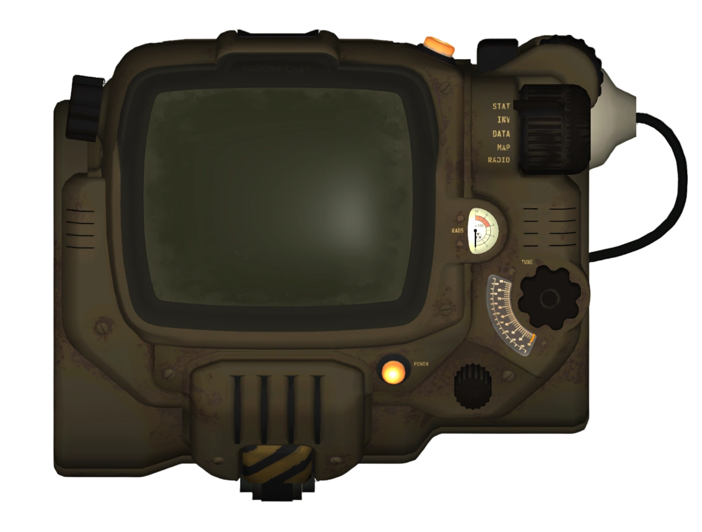

INDEX
모드팩 아카이브
Tullius' Ferry
The Sole Survivor's Railroad
[스카이림]00.뷰리다
뷰리다 관련 정보,질문,피드백,로그 등
1.2 이전(또는 그렇게 추정되는 글)
- 00.뷰리다 로딩속도 높이기
- 01.구속구 강제로 입히는거 싫으면 이거 키구 해
- 02.뷰리다 21：9 UI 패치
- 03.뷰리다 dof 위치
- 04.뷰리다 IED설정 오류 해결법
- 05.뷰리다 새회차 MCM 글버전
- 06.자기전에 뷰리다 팁(뷰지 아이콘 끄기,일본어 신음 끄기)
- 07.커쉐용 뷰리다 프레임 안 나오는 사람
- 08.어 커쉐프로필 이거 esp 꺼야함
- 09.뷰리다 모드 목록
- 10.뷰리다 임시진료소(예전 버전)
- 11.뷰리다 1.1 라이센스 설정
- 12.뷰리다 커쉐 던전 밝기 올리는법
- 13.뷰리다 판도라 돌리는 법 AtoZ
- 14.뷰리다 초반 모험 팁-젖소목장 털기
- 15.일단 뷰리다 퍼홀 이슈 일으키는 트리거 요인은 찾았어
- 16.뷰리다에서 도시에 있으면 렉걸리는 사람들은 보셈
1.2~1.21(또는 그렇게 추정되는 글)
- 00.뷰리다 1.2로 이사 효율적으로 하기
- 01.뷰리다 최적화 세팅
- 02.뷰리다 1.2 fhd 프레임 정상화
- 03.뷰리다 1.2 VRAMr 바디 관련 제거 버전
- 04.뷰리다 저사양 해볼려면 시도해볼만 한거 뭐가있을까
- 05.ssr끄니까 프레임 2배로 뛰네
- 06.뷰리다 프레임 관련
- 07.뷰리다 프레임관련 늘리는법
- 08.뷰리다 1.2 Slama CS 프리셋
- 09.뷰리다 0일차(1) 단축키바꿀것 메모
- 10.뷰리다 0일차(2) 창모드실패, vramr 교체, 다이나믹 노말맵 해제
- 11.뷰리다 0일차(3) 창모드성공, 그밖에 개인최적화
- 12.뷰리다 1.2 창모드 실행하기
- 13.나처럼 뷰리다 처음 접하는 사람이 봤으면 하는 글들
- 14.뷰리다 더함 추천 모드,사용환경 팁들
- 15.뷰리다 1.2 Container item Distributor CTD 방지 설정값 추가
- 16.근데 뷰리다 1.2 마력석 파편 어케 먹음
- 17.개초보 툴붕이 실행오류 관련 질문있습니다
- 18.(후방주의)내가 뷰리다에 추가해 사용중인 모드 리스트
- 19.(후방주의)뷰리다 1.2 P.A.I.A 적용하기
- 20.(후방주의)뷰리다 1.2 프리셋 피부 텍스쳐 보라색 문제
- 21.(후방주의)뷰리다 1.2 한손검＋단검 포아너 고유 모션(피스키퍼) 쓰는 법
- 22.난 뷰리다 1.2 프레임 드랍 없는거같은데
- 23.(후방주의)달릴때마다 엉덩이에 팬티자국 나는거
- 24.뷰리다 1.2 대검이 캐릭터를 뚫고 들어오는데
- 25.뷰리다 1.2 Ashe Crystal Heart Replacer 찐빠 수정사항
- 26.뷰리다 1.2 다이나믹 노말맵 꺼버려
- 27.뷰리다 1.2 매춘하는 이거 무슨 모드인가요
- 28.뷰리다 1.2 미믹한테 당했는데 배 어케 돌려놔요
- 29.뷰리다 1.2 발자국 발광 해결한거 같다
- 30.뷰리다 1.2 빗방울 텍스쳐 찾음
- 31.뷰리다 1.2 새 캐릭 생성 중인데 버그인지 구분이 되지않음
- 32.뷰리다 1.2 석판퀘 먹통
- 33.뷰리다 1.2 세딧 스크립트 이거 아니였나
- 34.뷰리다 1.2 시점질문
- 35.뷰리다 1.2 야스할때 이거 뭥미
- 36.뷰리다 메인퀘 시작안될때
- 37.뷰리다 창모드 성공함
- 38.뷰리다 데이건 질문
- 39.뷰리다 최적화때문네 VRAMr 받은사람 필독(3번과 연결되는 글)
- 40.뷰리다 1.2 커쉐 캐릭터조명 관련
- 41.뷰지스 리다이브 내드라이브가 CDEFGH 가 아니다 손
- 42.뷰리다 경로설정 해줘야하는거 한개 추가
- 43.뷰리다 1.2 은신 이동,멈춤 시 카메라 위 아래로 들썩이는 애니메이션 찾음
- 44.뷰리다 1.2 절정 신음 안나옴
- 45.뷰리다 야스 자동진행되는거 아마이새기때문인거같은데
- 46.뷰리다 개인커스텀 메모용 키변경,MCM변경 등
- 47.뷰리다 언포기빙 마스터로 잡힌 All Armor-Footprints Patch 마스터 제거 버전
- 48.뷰리다 바슬 돌리는 방법
- 49.뷰리다 1.2.1 핫픽스 디스플레이 트웍 오타 제보
- 50.뷰리다 1.2 활 스닉 모션 화면 출렁임 교정 방법(43번과 비슷한 문제,다른 해결법)
- 51.뷰리다 1.2 타격 이펙트 눈뽕 개선 방법
- 52.뷰리다 타격 눈뽕 괴로운 개툴리 클릭 - 툴리우스
- 52.뷰리다 타격 눈뽕 괴로운 개툴리 클릭
- 53.뷰리다 1.2 npc 사정 문제 야매 해결
- 54.뷰리다 1.2 Bow Charge Plus 사용시 근접무기 데미지가 안박히는 문제
- 55.뷰리다 1.2 npc와 허그 하면 뒤지는 문제
- 56.뷰리다 1.2 Skyrim Arrow Overhaul 이 모드 빼도되냐
- 57.뷰리다 1.2 대검 강공이후 좌클 안나감
- 58.뷰리다 1.2 대검 대기 모션
- 59.뷰리다 1.2 바슬 경로 주의
- 60.뷰리다 1.2 커쉐 PBR 관련 질문
- 60.뷰리다 1.2 커쉐 PBR 관련 질문
- 61.뷰리다 1.2 매쉬누락인가
- 62.뷰리다 소울젬 오븐4 정수 npc한테 먹이는 법 없냐
- 63.흥리커쉐, 뷰리다 최적화 팁
- 64.뷰리다 1.2 울타리 텍스처 누락
- 65.뷰리다 1.2 생귄 심포니 CIF 설치 안된걸로 인식됨
- 66.뷰리다 1.2 잘 되다 몇일 지나니 프레임 떡락
- 67.뷰리다 1.2 어느순간 갑자기 마법 도끼를 지 맘대로 드는데
- 68.뷰리다 1.2 야스 체위 변경 어떻게 하나요
- 69.뷰리다 1.2 메인메뉴 비디오 실행 질문
- 70.뷰리다 1.2 디스플레이 트윅 이렇게 돼 있으면
- 71.뷰리다 1.2 물광피부 어떻게 제거하냐
- 72.뷰리다에서 낮은 gpu 사용율 문제 해결
- 73.뷰리다 1.2 로딩화면 리텍된거 나오다가 검은색 로딩 화면으로 바뀜
- 74.커쉐 신버전 고집할 필요가 전혀없었네
- 75.뷰리다 1.2 ini 랑 정상화 ini 랑 비교한 내용 공유
- 76.뷰리다 1.2 하는사람들 이거 체크하셈
- 77.뷰리다 1.2 메레디아 퀘에서 발생한 문제
- 78.뷰리다 1.2 마법에 관한 정보(확실치 않음)
- 79.뷰리다 1.2 화면이 하얀색으로 전부 깨져보입니다
- 80.뷰리다 1.2 true hud
- 81.뷰리다 1.2 npc에센셜 질문
- 82.뷰리다 1.2 사용중입니다 질문 하나만 할게요
- 83.갑자기 마우스 갖다대도 상호작용 글씨가 안나옴
- 84.뷰리다 1.2 Fire Hurts dll 끄니까 쥐소굴 무사히 통과했음
- 85.뷰리다 패드 쓰는 사람있냐
- 86.뷰리다 심슬 노예화 이후 아이템 회수 방법
- 87.데이건 야스 중 탈의 안하는 찐빠 수정하기
- 88.뷰리다 커쉐 옷 광택 줄이는법은 없나
1.3~1.31(또는 그렇게 추정되는 글)
- 00.뷰리다 1.3.1 추가,업데이트 모드 상세 내역
- 01.뷰리다 프레임관련 늘리는법
- 02.뷰리다1.3 최적화 엔비디아 제어판 설정하기
- 03.i7-7700 글카3060의 뷰리다 세팅 및 방법
- 04.똥노트북으로 뷰리다 1.3.1 구동기
- 05.뷰리다 1.3.1 까지의 설치하는 순서 및 주의사항 및 개인메모
- 06.뷰리다1.31 새회차이후 개인최적화
- 07.뷰리다 1.3 정식 VRAMr Output
- 08.뷰리다 1.31 vramr-p 돌린 거
- 10.뷰리다 1.31 장소 한글화
- 11.뷰리다 1.3 미믹 보이면 잡지말고 그냥 지나가
- 12.강 이렇게 깨진거는 Vramr 다시 돌려야하냐
- 13.뷰리다 1.3 소울젬오븐 기본 설정
- 14.뷰리다 1.3 후타,보추 옵션 사용방법
- 15.뷰리다1.3 Unforgiving Devices 고로시 옵션 추가
- 16.뷰리다 1.3.1 mcm 레코더로 돌아간 모드들 세팅값 스샷
- 17.뷰리다에 커스텀 트레일, 파티클 더한사람 필독
- 18.Devious Curses NG 0.7.1 뷰리다에 더할 때 바슬 어떻게 돌리냐
- 19.뷰리다 1.3.1 Estrus Chaurus 더함 일기
- 20.뷰리다 스터터링 해결 허무하고만
- 21.뷰리다 헬겐 퀘스트 스킵
- 22.뷰리다 이거 모르는 애들 은근 많네
- 23.뷰리다 이유없는 전투 ctd 원인
- 24.뷰리다 1.3 F12 눌러도 커쉐창이 안 뜸
- 25.뷰리다 1.3 스타킹 물에서 나오면 광택이 지나치게 강함
- 26.뷰리다 1.3 npc리텍 1.2꺼 이식해도 문제 없을라나
- 27.뷰리다 1.3 수프,스튜 메쉬 픽스
- 28.1.2커쉐 쓰고싶으면 1.3파일에서 커쉐 옮기지 말기
- 29.다들 뷰리다 1.3 바보다이얼로그 정상 작동하냐
- 30.뷰리다 1.3 프레임 최적화용 ini 넣는 경로
- 31.뷰리다 1.3 웅챠웅챠 중 문제
- 32.뷰리다1.3에 내장된 slama 커쉐는 리쉐를 안 쓴다,꺼져있는 게 맞다
- 33.pg패쳐 돌린 뒤에 메쉬 고장난 사람들은 27번 글에서 아웃풋 다운받아 쓰기
- 34.뷰리다 1.3 디핏 껏다켜도 문제없냐
- 35.뷰리다 1.3 나침반 UI 찐빠 해결하는법좀
- 36.뷰리다 1.3 Fortune IVDT 신음 말고 대사도 들리게 하는법
- 37.뷰리다 1.3 소울젬 오븐 다들 잘 되냐
- 38.몸에 보라문신=마법 라이센스,야스시 게이지=흥분도
- 39.(후방주의)뷰리다 1.3 Improved Camera 개인 수정
- 40.이거 뷰리다 1.3 기본 outfit 뭐더라
- 41.영주한테 사냥증을 사야 동물 사냥해서 내다팔기 가능
24년도 고대 유물 글인데 혹시몰라 남김
미해결
- 00.(후방주의)뛰어다닐때 빵댕이 짝짜꿍을 하는데
- 01.뷰리다 1.2 NPC 자막 안보이는 현상
- 02.뷰리다 1.2 몸 문신 및 퀘스트 ui 질문
- 03.뷰리다 1.2 1인칭시점 손목문제
- 04.뷰리다 1.2 Anub Bigguy
- 05.뷰리다 1.2 광원 효과 이상함
- 06.뷰리다 1.2 클로이 나만 이러냐
- 07.뷰리다 1.3.1 활질 CTD
- 08.뷰리다 1.2 리프트 산 통로 인근에 문제 발생(1.3에선 해결한듯)
- 09.뷰리다 유저중 이런 증상 있는지 확인좀
- 10.뷰리다 1.2 화면 시스템 자막 2중 겹침문제
- 11.뷰리다 1.2 데이건 목욕 할 때 문제있음
- 12.뷰리다 1.2 건물 땅에 박혀있음
- 13.뷰리다 1.2 드로거 포션 사용 이슈
- 14.뷰리다 1.3 소울젬 오븐 다들 잘 되냐
- 15.뷰리다 1.2 과거의 조각들 사일러스 에센셜이 안풀림
- 16.뷰리다 1.3.1기준 파마 소븐가드 업데이트 및 테스트 기록
- 17.뷰리다 1.3 에린 새회차시 XPMSE2 스켈레톤 오류
- 18.뷰리다 1.3 아웃핏 시스템 질문
- 19.뷰리다 1.3 화이트런 정문 가기전에 있는 다리 ctd
- 20.뷰리다 1.3 늑대랑 전투해보니까 늑대가 말하는데(이거 카이단 쪽 버그였던가..아님말고)
[스카이림]01.애니림
[스카이림] 애니림 관련 글들
질문,피드백,로그
V2~2.2(또는 그렇게 추정되는 글)
- 00.애니림 V2.2 SLWidgets ui 활성화 안될 때
- 01.애니림 NPC 텍스쳐 일부 색이 다른건 왜그럴까
- 02.애니림 v2 이거 위치 어떻게 옮김
- 03.애니림 궁금해요
- 04.애니림 바슬 머돌려야함
- 05.애니림 발톱끼는 E키 먹통 문제 해결방법점-답답할시 관련 모드 제거
- 06.뉴비 애니림 스펠 핫바 ui가 사라집니다
- 07.실행 경로 관련 질문
- 08.애니림 프리징 질문
- 09.애니림 화면 이상
- 10.미르물니어 퀘 합류지점 ctd(합류지점 먼저 가있지 말고 먼저 보내고 나중에 합류)
- 11.애니림v2 오바디 프리셋 추가하는 법 없나
- 12.애니림에서 LOTD 상인패치 작동 조건 찾았다
- 13.어느새부터인가 케릭터에 ＋가 뜨는데 혹시 원인아는사람
- 14.자유시점시 포토모드, sam메뉴 사용시 시점 고정 질문(애니림 V2에 내장된 freeflycam 삭제)
클래식(또는 그렇게 추정되는 글)
- 00.애니림 걷는 자세 엉거주춤해지는거 원인 아시는분
- 01.모드팩 모드 적용 질문
- 02.애니림 F 점프력
- 03.애니림 immersive equipment display 단축키가 모임
- 04.애니림 MCM 설정 SL Anim Loader
- 05.애니림 npc 의상 보라색
- 06.애니림 건피
- 07.애니림 나침반
- 08.애니림 눈밑 점 어캐없앰
- 09.애니림 닷지 단축키 어디서 바꿀 수 있나요(EnableSprintKeyDodge=false)
- 10.애니림 대상 지정하는 단축키가 뭔지 알려주실분
- 11.애니림 랜턴 관련 질문
- 12.애니림 메뉴 프레임드랍(V2 3번이랑 같은 문제)
- 13.오바디 내가 생각하는게 맞나
- 14.애니림 속눈썹 관통
- 15.애니림 와바잭 퀘스트 버그 겪어본 사람 있냐(6번이랑 같은 문제)
- 16.애니림 옷 리텍 무슨 모드임
- 17.애니림 자동루팅모드 뭐임
- 18.애니림 저사양 질문
- 19.Nvidia Reflex Support MO2에서 해제
- 20.애니림 추가동료 몸이 이상해요
- 21.애니림 뱀로 버그 및 하콘 대사 진행안됨(업뎃으로 고쳤으나 혹시몰라 남김)
- 22.애니림 클래식 F 확정 ctd(업뎃으로 고쳤으나 혹시몰라 남김)
- 23.애니림 클래식 사양낮아서 Synthesis 돌려봤는데 이게 맞나요
- 24.(후방주의)애니림 클래식에 유리아나를 더함했는데 뭔가 잘못됨
- 25.우클릭을 방어로 바꾸고 싶을 때
- 26.애니림 파써낙스 폴리모프 이후 사라짐
- 27.애니림 피부 그림자 노이즈 & 투구 질문
- 28.(후방주의)애니림 후기겸 피드백겸 개인저장용
- 29.애니림F 1.2 업뎃 후 새 게임 시작이 안됨
- 30.애니림F V1.3 커쉐 LightLimitFix 비활성화하고 셰이더캐시 삭제 후 재컴파일하셈
- 31.애니림F SOS 쥬지달기 질문
- 32.애니림F 프리셋 폴더 위치가 어디임+모드배열 관련 질문
- 33.애니림은 OAR 로그 보는 단축키 뭐임
- 34.혹시 애니림 이번 업뎃에 투구 투명화 하는 모드 뭔지 아는 사람
- 35.애니림 1.3 업데이트 후 커쉐 프레임 확보 간단 팁
- 36.똥컴은 애니림 1.2커쉐 쓰지 말자
- 37.애니림 키스 모드 질문
- 38.애니림 1.4베타 커쉐도 캐시 지우고 컴파일 다시하기
[스카이림]05.모드
- Configurable Notification Messages MCM 번역
- Crafting Camera Fix(제작 시 과도한 클로즈업 픽스)
- Custom Light 페이스 라이트 및 바디 라이트 모드
- Devious Cidhna v1.10랑 시드나광산 확장 번역
- Devious Curses 0.7.4 번역 및 경량화
- Deviously Helpless Redux Ver1.31 번역
- Perfectly Valid Wards 방어막 마법 강화
- Pick Up Radius 1.8 번역(범위 내 아이템 자동 루팅)
- SLwidgets 흥분도 개인수정 공유
- SaveCountManagerSSE 세이브 개수 관리 모드
- Scriptless Stagger Limit 무한 넉백,경직 방지
- Skyrim SE Freeze Fix
- Spell Charging 오래 시전할 수록 강해지는 마법
- hda 파우치(모험가길드 파우치)투명화 공유
- 바슬에서 페이스젠 로드시 눈코입 망가지는거 수정하는 모드
- 스프리건 이펙트 버그 픽스
- 완전히 합리적인 강화 Tempering Is Totally Sesible
- 챠루스알 리텍 및 애니메이션 추가
- 키보드 키패드 1～8키 분리
- 킬무브 관련 문제 픽스모드
- 피부마법 등의 캐릭터 몸의 발광이펙트 제거 모드(skypatcher)
[스카이림]07.정보 념글
- (00)스카이림 버그 및 오류 해결법 모음집
- (후방주의)SAM툴을 이용해서 이쁜스샷을 찍어보자
- (후방주의)박력있는 야스하기
- (후방주의)짤질하다 발견한 커쉐 반사광 옵션
- CHIM 모드 짤막 팁
- DD 구속구 난이도에 개인적인 mcm 설정법
- JAVA 업데이트 이후 세이브 클리어 안되는 툴붕이들을 위해
- ssr끄니까 프레임 2배로 뛰네
- 개인적인 의상 클리핑을 줄이는 테크닉
- 걍 에린 CS Reshade 셋팅 개인적으로 이렇게 함
- 나만의 커쉐 꿀팁 보따리
- 내가 겪은 각종 모드 버그 해결 모음집
- 뉴비들을 위한 에린 설치법, 자주 질문 올라오는 찐빠 해결법
- 동료 ESL 작업하는방법
- 미락 주요 버그들 정리 및 해결법모음
- 미락팔로워 스칼마을 버그생긴툴붕이 와바랏
- 바보다이얼로그 공장도 안 알려주는 얼굴가슴엉덩이 수치 등급
- 뷰리다(또는 루트빌더를 사용)에서 개인설정이 초기화되는 현상 해결법
- 섹랩 애니메이션 업데이트 방법
- 소울젬오븐 SGO4 IF 1.9.4 업데이트 노트
- 스카이림 GPU 로드율 문제
- 스카이림 스터터링(잔렉) 없애는 정보 엔비디아 글카 전용 ReBAR 강제 적용
- 야스후 동료가 하면서 대화 씹을때 해결법
- 윈도우 클린설치 후 스카이림 실행을 위해 설치해야할 것들
- 익스피리언스 쓰면 이모드 필수로 해야할듯
- 커쉐 AIO 피부 밝기 및 광택관련 짧은 팁
- 커쉐 눈 메쉬 빛나는 문제 해결방안
- 타격 이펙트 너무 번쩍이면 수정해서 쓰기
- 특정 npc들 자리에서 안움직이는 버그 고쳐냈다
- 휠메뉴(Wheeler) 200％ 활용법
- 흥리커쉐 배포(지원중단)